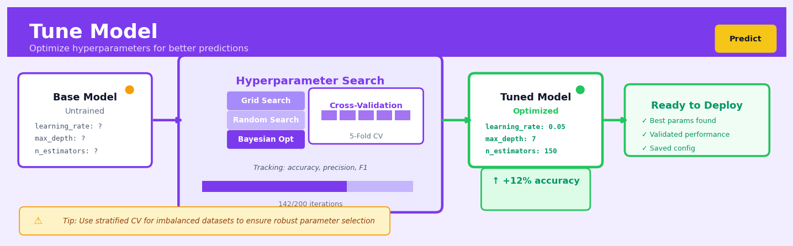

Tune Model#


The biggest mistake I see teams make is tuning hyperparameters on the same data they'll use for final evaluation, which gives you falsely optimistic metrics that fall apart in production. Always hold out a true test set that your tuning process never touches, and use cross-validation only on your training data to select parameters. Remember that more tuning iterations don't always mean better models—you can overfit to your validation folds just as easily as you can overfit to training data.
The 60-Second Version#
What it does: Tune Model automatically tests thousands of configuration combinations to find the settings that make your machine learning model perform best.
When to use it: You’ve built a model that works, but you need to squeeze out maximum accuracy before deploying it to production or presenting results to stakeholders.
What you get back: A single optimised configuration that you apply to your model, typically improving accuracy by 2–15% compared to default settings.
Difficulty |
Moderate |
Typical runtime |
Minutes to hours (scales with model complexity and search space) |
What you bring |
A trained model, the data it was trained on, and performance metric to optimise |
What you get |
The best hyperparameter configuration and its expected performance |
Heuristix bucket |
Predict — Machine Learning & Forecasting |
Tuning always risks overfitting to your test data—the configurations that win during tuning may not generalise to new data unless you validate on a truly held-out set.
Learning Objectives#
After reading this chapter, a business user will be able to:
Identify situations where model performance is suboptimal and determine whether hyperparameter tuning or additional data collection will yield better results.
Interpret tuning results to explain to stakeholders which model configuration was selected, why it outperformed alternatives, and what performance improvements were achieved.
Decide whether to deploy a tuned model by comparing its cross-validated performance against business requirements and existing baseline solutions.
After reading this chapter, a data scientist will be able to:
Configure the Tune Model node by selecting appropriate hyperparameter search spaces, cross-validation strategies, and optimization metrics for different algorithm types.
Balance the trade-off between search thoroughness and computational cost by choosing between grid search, random search, and Bayesian optimization approaches.
Diagnose overfitting in hyperparameter selection by analyzing performance gaps between validation folds, detecting information leakage, and validating results on held-out test sets.
Overview#
Tune Model is a systematic procedure for selecting optimal hyperparameter configurations of machine learning algorithms through automated search and cross-validated performance evaluation. It belongs to the family of model selection methods—specifically, the subfield of hyperparameter optimisation—and addresses the fundamental challenge that most learning algorithms have parameters that cannot be learned directly from data but must be specified before training begins. The Tune Model node automates the exploration of hyperparameter space, evaluates candidate configurations using rigorous cross-validation, and returns the configuration that maximises (or minimises) a chosen performance metric.
When to Use This#
Use this when you have selected a model family (e.g., gradient boosting, random forest, neural network) but need to determine the specific configuration—hyperparameter tuning is essential for extracting maximum predictive performance from flexible model families.
Use this when you are preparing a model for production deployment and need to justify that the chosen configuration is demonstrably superior to alternatives—tuning provides auditable evidence of systematic optimisation.
Use this when default hyperparameters underperform on your specific dataset—defaults are chosen to be reasonable across many problems but are rarely optimal for any particular problem.
Use this when you have sufficient data and computational budget—tuning requires training multiple models, so you need enough samples for reliable cross-validation estimates and enough time for the search to complete.
Use this when model performance is business-critical—the marginal gains from tuning (often 2–10% improvement in key metrics) can translate to significant business value in high-stakes applications.
Use this when you need to balance competing objectives—for example, tuning regularisation strength to trade off between training fit and generalisation, or tuning tree depth to balance accuracy against interpretability.
Do NOT use this when your dataset is very small (fewer than a few hundred observations)—cross-validation estimates become unreliable, and you risk overfitting to noise in the validation folds.
Do NOT use this when you lack a clear performance metric—tuning optimises a specific objective, and optimising a poorly chosen metric can produce models that perform well on paper but fail in practice.
Do NOT use this when computational resources are severely constrained and you need results immediately—even efficient search methods require evaluating many configurations.
Do NOT use this when the model family is fundamentally inappropriate for your problem—no amount of tuning will make a linear model capture complex nonlinear relationships.
Questions This Answers#
Getting the Best Performance from Our Models#
Which settings will give us the most accurate sales forecast for Q4?
Why is our customer churn model only 72% accurate when the vendor demo showed 89%?
Can we improve our fraud detection without triggering so many false alarms that upset legitimate customers?
What’s the right balance between catching more defaulters and not rejecting good loan applicants?
How do we squeeze another 5% accuracy out of our recommendation engine before the holiday season?
Choosing Between Model Configurations#
Should we use 50 or 200 decision trees in our pricing model—does more always mean better?
Is a more complex model worth the extra runtime, or should we stick with something simpler that our team can actually explain to regulators?
Which model setup performs best on our European customers versus our Asian markets?
We have three different configurations that all look good in testing—which one will hold up best when we deploy it next month?
Does tuning our model on last year’s data actually improve predictions for this year, or are we overfitting?
Making Models Work in Production#
Why does our model work great in testing but fall apart after two weeks in production?
Can we automate the model refinement process instead of having our data scientist manually test dozens of combinations?
What’s the minimum amount of tuning we need to do to get good-enough results without spending three weeks on it?
If we retrain our inventory model monthly, do we need to re-tune the settings each time or can we lock them in?
How It Works#
Imagine you’re trying to bake the perfect chocolate chip cookie, but the recipe doesn’t tell you the exact oven temperature or baking time—it just says “bake until done.” You could guess randomly, but that wastes ingredients. Instead, you bake ten batches systematically: five temperatures (325°F to 375°F) crossed with two times (10 and 12 minutes), making ten combinations. You bring all ten batches to a tasting panel who scores each batch. The 350°F-for-11-minutes batch scores highest, so that becomes your official recipe. Tune Model does exactly this for machine learning algorithms: it systematically tests combinations of settings, evaluates each with rigorous testing, and identifies the winner.
┌─────────────────────────────────────────────────────────┐
│ HYPERPARAMETER SEARCH SPACE │
│ │
│ Setting A: [1, 5, 10, 20] │
│ Setting B: [0.01, 0.1, 1.0] │
│ Setting C: [True, False] │
│ │
│ Total combinations: 4 × 3 × 2 = 24 configs │
└─────────────────────────────────────────────────────────┘
↓
┌─────────────────────────────────────────────────────────┐
│ TEST EACH CONFIGURATION WITH CROSS-VALIDATION │
│ │
│ Config #1 → Train/Test 5 times → Avg Score: 0.82 │
│ Config #2 → Train/Test 5 times → Avg Score: 0.79 │
│ Config #3 → Train/Test 5 times → Avg Score: 0.88 ★ │
│ ⋮ │
│ Config #24 → Train/Test 5 times → Avg Score: 0.81 │
└─────────────────────────────────────────────────────────┘
↓
┌─────────────────────────────────────────────────────────┐
│ WINNER: Configuration #3 │
│ Setting A=10, Setting B=0.1, Setting C=True │
│ Cross-validated Score: 0.88 │
└─────────────────────────────────────────────────────────┘
Step 1: Define the search space. You specify which algorithm settings to explore and what values to try for each. For example, you might test learning rates of 0.01, 0.1, and 1.0, crossed with tree depths of 3, 5, and 10. This creates a grid of nine possible configurations to evaluate.
Step 2: Generate candidate configurations. The system creates every possible combination from your search space. With three learning rates, two depths, and two other yes-no choices, you’d get twelve unique configurations. Each represents one complete set of instructions for training a model.
Step 3: Evaluate each configuration with cross-validation. For each candidate configuration, the system doesn’t just train once—it trains multiple times using different portions of your data as test sets. This produces an average performance score that’s much more reliable than a single test. A configuration might score 0.85, 0.83, 0.87, 0.84, and 0.86 across five folds, averaging to 0.85.
Step 4: Compare all configurations. Once every candidate has been scored, the system ranks them. The configuration with the best average cross-validated score becomes the winner. This isn’t just the setting that got lucky once—it’s the setting that performed well consistently across multiple tests.
Step 5: Return the optimal configuration. The system outputs the winning combination of settings, along with its performance score. You now have the recipe: not a guess, but a systematically validated choice that you can confidently use for final model training.
The key insight: Hyperparameters control how a learning algorithm behaves, but we can’t know the best settings in advance—so we treat hyperparameter selection itself as a search problem, using the same rigorous testing methodology we’d use to evaluate any scientific hypothesis.
The Intuition#
Imagine you are a master chef preparing a complex dish for a competition. Your recipe has several adjustable parameters: the oven temperature, cooking time, amount of each spice, and the ratio of ingredients. You cannot determine these settings by reading the recipe—you must experiment. You could try every possible combination systematically, but with dozens of adjustable elements, this would take years. Instead, you use your experience to focus on promising regions of the “flavour space,” occasionally trying something unexpected to avoid missing a brilliant combination. After each attempt, you taste the result (your validation metric) and use that feedback to guide your next experiment. This iterative process of systematic experimentation, evaluation, and refinement is precisely what hyperparameter tuning accomplishes for machine learning models.
The key insight is that hyperparameters live in a fundamentally different space than model parameters. When you train a linear regression, the algorithm learns the coefficients (parameters) directly by minimising a loss function on the training data. But the regularisation strength in ridge regression, or the number of trees in a random forest, cannot be learned this way—they control how the learning happens. If you try to learn hyperparameters on training data, you will simply choose configurations that memorise the training set perfectly, which is useless for prediction. This is why we must evaluate hyperparameter configurations on held-out data, and why cross-validation is essential: it gives us an honest estimate of how each configuration will perform on new, unseen data.
The challenge is that the hyperparameter space can be vast. A gradient boosting model might have learning rate (continuous), number of trees (integer), maximum depth (integer), minimum samples per leaf (integer), subsample fraction (continuous), and several more. Even with just 10 values for each of 6 hyperparameters, an exhaustive grid search would require evaluating one million configurations. This is computationally infeasible. Modern tuning methods address this by searching intelligently: random search samples configurations uniformly, providing surprisingly good coverage; Bayesian optimisation builds a probabilistic model of the performance landscape and focuses evaluations on promising regions; successive halving eliminates poor configurations early, allocating more resources to survivors. The art of hyperparameter tuning lies in choosing search strategies that find excellent configurations without exhaustively exploring the space.
The Mathematics#
Problem Formulation#
Let \(\mathcal{A}_\lambda\) denote a learning algorithm parameterised by hyperparameters \(\lambda \in \Lambda\), where \(\Lambda\) is the hyperparameter space. Given a training dataset \(\mathcal{D} = \{(x_i, y_i)\}_{i=1}^n\), the algorithm produces a model \(\hat{f}_\lambda = \mathcal{A}_\lambda(\mathcal{D})\).
Our goal is to find the hyperparameter configuration that minimises the expected generalisation error:
where \(L\) is a loss function and \(P\) is the true data-generating distribution.
Since \(P\) is unknown, we estimate the generalisation error using \(K\)-fold cross-validation. We partition \(\mathcal{D}\) into \(K\) disjoint folds \(\mathcal{D}_1, \ldots, \mathcal{D}_K\). For each fold \(k\), we train on \(\mathcal{D}^{(-k)} = \mathcal{D} \setminus \mathcal{D}_k\) and evaluate on \(\mathcal{D}_k\):
where \(\hat{f}_\lambda^{(-k)} = \mathcal{A}_\lambda(\mathcal{D}^{(-k)})\).
The hyperparameter tuning problem becomes:
Search Strategies#
Grid Search#
Grid search defines a finite set of values for each hyperparameter and evaluates all combinations. If \(\lambda = (\lambda_1, \ldots, \lambda_d)\) with \(|\Lambda_j|\) candidate values for dimension \(j\), the total number of evaluations is:
This grows exponentially with dimension—the curse of dimensionality for hyperparameter search.
Random Search#
Random search samples \(N\) configurations uniformly from \(\Lambda\). Bergstra and Bengio (2012) proved that random search is more efficient than grid search when only a subset of hyperparameters matter. If the effective dimensionality is \(d_{\text{eff}} < d\), random search explores the important dimensions more thoroughly.
For a hyperparameter with importance concentrated in a fraction \(p\) of its range, the probability that at least one of \(N\) random samples falls in this region is:
With \(N = 60\) samples, we achieve 95% probability of finding a configuration within the top 5% of any single important hyperparameter.
Bayesian Optimisation#
Bayesian optimisation models the cross-validation score as a function of hyperparameters using a surrogate model, typically a Gaussian process:
where \(\mu(\lambda)\) is the mean function and \(k(\lambda, \lambda')\) is the covariance kernel.
After observing \(t\) evaluations \(\{(\lambda_i, y_i)\}_{i=1}^t\) where \(y_i = \text{CV}(\lambda_i)\), the posterior predictive distribution at a new point \(\lambda\) is Gaussian:
with:
where \(K_{ij} = k(\lambda_i, \lambda_j)\) and \(k(\lambda) = [k(\lambda, \lambda_1), \ldots, k(\lambda, \lambda_t)]^\top\).
The next evaluation point is chosen by maximising an acquisition function that balances exploration and exploitation. The Expected Improvement (EI) acquisition function is:
where \(y^* = \min_{i \leq t} y_i\), \(z = (y^* - \mu_t(\lambda))/\sigma_t(\lambda)\), and \(\Phi\), \(\phi\) are the standard normal CDF and PDF.
Assumptions#
Stationarity: The relationship between hyperparameters and performance is consistent across the hyperparameter space—there are no discontinuous jumps or qualitative changes in behaviour.
Smoothness: Similar hyperparameter configurations yield similar performance, enabling interpolation (assumed by Bayesian optimisation with smooth kernels).
Representative folds: Cross-validation folds are representative samples of the underlying distribution; performance on folds predicts performance on new data.
Sufficient data: Each fold contains enough samples for reliable model training and evaluation.
Fixed computational budget: We have a finite budget of model evaluations; the search must find good configurations within this budget.
Statistical Considerations#
The cross-validation estimate \(\widehat{\text{CV}}(\lambda)\) is itself a random variable with variance:
The covariance term arises because folds share training data, making fold estimates correlated. This variance means that when comparing configurations, we should account for uncertainty—a configuration with slightly worse mean CV score but lower variance may be preferable.
When selecting from many configurations, we face a multiple comparisons problem. The probability of selecting a configuration that appears best by chance increases with the number of configurations evaluated. This is one form of overfitting to the validation set.
Understanding the Mathematics#
The Hyperparameter Configuration Space#
The equation:
Read it aloud:
“A hyperparameter configuration lambda belongs to the space Lambda, which is the Cartesian product of p individual hyperparameter ranges.”
What each symbol means:
\(\boldsymbol{\lambda}\) = one complete hyperparameter configuration (a specific choice for all settings)
\(\Lambda\) = the entire hyperparameter space (all possible combinations)
\(\Lambda_1, \Lambda_2, \ldots, \Lambda_p\) = the allowed range for each individual hyperparameter
\(\times\) = Cartesian product (all possible combinations)
\(p\) = the total number of hyperparameters to tune
A concrete numerical example:
You’re tuning a random forest for customer churn prediction. You have three hyperparameters: number of trees \(\Lambda_1 = \{50, 100, 200\}\), maximum depth \(\Lambda_2 = \{5, 10, 15\}\), and minimum samples per leaf \(\Lambda_3 = \{1, 5, 10\}\). One specific configuration might be \(\boldsymbol{\lambda} = (100, 10, 5)\)—meaning 100 trees, maximum depth of 10, and 5 samples per leaf. The total space \(\Lambda\) contains \(3 \times 3 \times 3 = 27\) possible configurations.
Why this equation matters:
This defines the search territory—without specifying the valid range for each hyperparameter, automated tuning would waste time testing nonsensical configurations like negative tree counts or impossibly large depths.
The Cross-Validation Performance Estimate#
The equation:
Read it aloud:
“The cross-validation score for configuration lambda equals the average loss across K folds, where each fold measures how well a model trained without fold k performs on fold k.”
What each symbol means:
\(\text{CV}(\boldsymbol{\lambda})\) = cross-validated performance score for configuration \(\boldsymbol{\lambda}\)
\(K\) = number of folds (typically 5 or 10)
\(\mathcal{L}\) = loss function (e.g., mean squared error, accuracy)
\(M_{\boldsymbol{\lambda}}^{(-k)}\) = model trained with configuration \(\boldsymbol{\lambda}\) on all data except fold \(k\)
\(D_k\) = the held-out data in fold \(k\)
A concrete numerical example:
You’re tuning a fraud detection model using 5-fold cross-validation with accuracy as your metric. For \(\boldsymbol{\lambda} = (100, 10, 5)\), the accuracies on each fold are: 0.92, 0.89, 0.91, 0.93, 0.88. The CV score is \(\text{CV}(\boldsymbol{\lambda}) = \frac{1}{5}(0.92 + 0.89 + 0.91 + 0.93 + 0.88) = \frac{4.53}{5} = 0.906\) or 90.6% accuracy.
Why this equation matters:
This prevents overfitting during hyperparameter selection—testing on multiple folds reveals whether a configuration genuinely generalises or just got lucky on one particular train-test split.
The Optimisation Objective#
The equation:
Read it aloud:
“The optimal hyperparameter configuration lambda-star is the configuration from the hyperparameter space that minimises the cross-validation score.”
What each symbol means:
\(\boldsymbol{\lambda}^*\) = the best hyperparameter configuration
\(\arg\min\) = “the argument that minimises” (the input value that produces the smallest output)
\(\boldsymbol{\lambda} \in \Lambda\) = searching over all valid configurations
A concrete numerical example:
You tested three configurations for a loan default predictor (using error rate): \(\boldsymbol{\lambda}_1\) achieved CV = 0.142, \(\boldsymbol{\lambda}_2\) achieved CV = 0.098, and \(\boldsymbol{\lambda}_3\) achieved CV = 0.115. Therefore \(\boldsymbol{\lambda}^* = \boldsymbol{\lambda}_2\) because 0.098 < 0.115 < 0.142.
Why this equation matters:
This is the entire purpose of tuning—systematically identifying which configuration delivers the best predictive performance rather than guessing or using defaults that may be suboptimal for your specific business problem.
The Big Picture#
The mathematics of hyperparameter tuning formalises a structured search through configuration space to find settings that maximise model performance on unseen data. We use cross-validation rather than a single train-test split because it provides a more reliable performance estimate that accounts for dataset variability. The optimisation objective ties everything together: it defines “best” rigorously and ensures reproducibility. This mathematical framework was chosen over trial-and-error because it guarantees systematic exploration, quantifies uncertainty, and prevents the analyst from inadvertently overfitting to a particular validation set. At its core, the mathematics answers one question: which knobs should we turn, and to what settings, to build the most reliable predictive model?
Python Implementation#
import numpy as np
import pandas as pd
from sklearn.datasets import make_classification
from sklearn.model_selection import GridSearchCV, RandomizedSearchCV, cross_val_score
from sklearn.ensemble import GradientBoostingClassifier
from sklearn.metrics import roc_auc_score, make_scorer
from scipy.stats import uniform, randint
import warnings
warnings.filterwarnings('ignore')
# Generate realistic synthetic data: customer churn prediction
np.random.seed(42)
X, y = make_classification(
n_samples=2000,
n_features=20,
n_informative=10,
n_redundant=5,
n_clusters_per_class=3,
weights=[0.7, 0.3], # Imbalanced classes
flip_y=0.05, # 5% label noise
random_state=42
)
# Convert to DataFrame for realism
feature_names = [f'feature_{i}' for i in range(20)]
df = pd.DataFrame(X, columns=feature_names)
df['target'] = y
print(f"Dataset shape: {df.shape}")
print(f"Class distribution:\n{df['target'].value_counts(normalize=True)}")
# Prepare features and target
X = df[feature_names].values
y = df['target'].values
# Define the base model
base_model = GradientBoostingClassifier(random_state=42)
# ---------------------------------------------------------
# Example 1: Grid Search
# ---------------------------------------------------------
print("\n" + "="*60)
print("GRID SEARCH")
print("="*60)
# Define parameter grid
param_grid = {
'n_estimators': [50, 100, 200],
'learning_rate': [0.01, 0.1, 0.2],
'max_depth': [3, 5, 7],
'min_samples_split': [2, 10, 20]
}
# Calculate total configurations
total_configs = np.prod([len(v) for v in param_grid.values()])
print(f"Total configurations to evaluate: {total_configs}")
# Run grid search with 5-fold cross-validation
grid_search = GridSearchCV(
estimator=base_model,
param_grid=param_grid,
scoring='roc_auc',
cv=5,
n_jobs=-1,
verbose=1,
return_train_score=True
)
grid_search.fit(X, y)
# Display results
print(f"\nBest parameters: {grid_search.best_params_}")
print(f"Best CV ROC-AUC: {grid_search.best_score_:.4f}")
# Show top 5 configurations
results_df = pd.DataFrame(grid_search.cv_results_)
top_5 = results_df.nsmallest(5, 'rank_test_score')[
['params', 'mean_test_score', 'std_test_score', 'mean_train_score']
]
print("\nTop 5 configurations:")
print(top_5.to_string(index=False))
# ---------------------------------------------------------
# Example 2: Random Search
# ---------------------------------------------------------
print("\n" + "="*60)
print("RANDOM SEARCH")
print("="*60)
# Define parameter distributions
param_distributions = {
'n_estimators': randint(50, 300),
'learning_rate': uniform(0.01, 0.29), # uniform(loc, scale) -> [loc, loc+scale]
'max_depth': randint(2, 10),
'min_samples_split': randint(2, 50),
'subsample': uniform(0.6, 0.4), # [0.6, 1.0]
'max_features': uniform(0.5, 0.5) # [0.5, 1.0]
}
# Run random search with 60 iterations (matches grid search budget roughly)
random_search = RandomizedSearchCV(
estimator=base_model,
param_distributions=param_distributions,
n_iter=60,
scoring='roc_auc',
cv=5,
n_jobs=-1,
verbose=1,
random_state=42,
return_train_score=True
)
random_search.fit(X, y)
print(f"\nBest parameters: {random_search.best_params_}")
print(f"Best CV ROC-AUC: {random_search.best_score_:.4f}")
# ---------------------------------------------------------
# Example 3: Bayesian Optimisation with scikit-optimize
# ---------------------------------------------------------
print("\n" + "="*60)
print("BAYESIAN OPTIMISATION")
print("="*60)
try:
from skopt import BayesSearchCV
from skopt.space import Real, Integer
# Define search space
search_space = {
'n_estimators': Integer(50, 300),
'learning_rate': Real(0.01, 0.3, prior='log-uniform'),
'max_depth': Integer(2, 10),
'min_samples_split': Integer(2, 50
## Visualisations


## Using This in Heuristix
### What Data to Connect
The Tune Model node expects a **prepared dataset** with your features and target variable. Connect it to nodes like Clean Data, Feature Engineer, or Split Data (use the training split only—never tune on test data).
**Required columns:**
- One **target column** (numeric for regression, categorical for classification)
- One or more **feature columns** (numeric or categorical)
Your data should already be cleaned and encoded. Here's a simple example:
| customer_age | income | previous_purchases | will_buy (target) |
|--------------|--------|-------------------|-------------------|
| 34 | 52000 | 3 | Yes |
| 45 | 68000 | 7 | Yes |
| 29 | 41000 | 1 | No |
### Configuration Parameters
| Parameter | What It Controls | Sensible Default | When to Change |
|-----------|-----------------|------------------|----------------|
| **Algorithm** | Which ML algorithm to tune (Random Forest, XGBoost, etc.) | Random Forest | Based on your problem type and data size |
| **Metric** | What to optimize for (Accuracy, F1, RMSE, etc.) | Accuracy (classification) or RMSE (regression) | Use F1 for imbalanced classes; use AUC when probability calibration matters |
| **Search Method** | How to explore hyperparameter space: Grid, Random, or Bayesian | Random Search | Use Grid for small spaces (<50 combinations); Bayesian for expensive models or large spaces |
| **Number of Iterations** | How many configurations to try | 20 | Increase to 50+ for complex problems; reduce to 10 for quick experiments |
| **Cross-Validation Folds** | How many folds for validation | 5 | Use 10 for small datasets (<1000 rows); use 3 for very large datasets to save time |
| **Hyperparameter Ranges** | Min/max values for each hyperparameter | Algorithm-specific defaults | Widen ranges if optimal values hit boundaries; narrow to refine search |
### What You'll Get Out
**Performance Tab:**
- **Best Configuration card**: Shows the winning hyperparameters and their cross-validated score
- **Iteration History chart**: Line plot showing metric improvement across search iterations
- **Top 10 Configurations table**: All tried configurations ranked by performance
**Model Tab:**
- **Tuned model object**: Ready to use in downstream nodes
- **Feature Importance chart** (if supported by algorithm): Which features mattered most
**Console Log:**
- Real-time progress updates as each configuration is evaluated
- Warnings if certain configurations failed
### Connecting Downstream
After tuning, connect to:
- **Train Model** → Use the best hyperparameters to train on your full training set
- **Predict** → Apply the tuned model directly to make predictions
- **Evaluate Model** → Test performance on holdout data with your optimized configuration
Most workflows look like: Split Data → Tune Model (on train) → Train Model (with best params) → Predict (on test) → Evaluate Model.
### Quick Start: Classification with Random Forest
1. **Connect your training data** to Tune Model (after Split Data or Clean Data)
2. **Select algorithm**: Choose "Random Forest Classifier"
3. **Pick your metric**: Select "F1 Score" if you have imbalanced classes, otherwise "Accuracy"
4. **Set iterations**: Start with 20 for your first run
5. **Run the node** and watch the console—it takes a few minutes
6. **Review the results**: Check the Best Configuration card for winning parameters
7. **Connect to Train Model**: Use these parameters to train your final model
### Practical Tips from Experience
**Start small, then scale.** Run 10 iterations with 3-fold CV first to make sure everything works. Once validated, increase to 50 iterations with 5-fold CV for your final tuning run.
**Watch for boundary values.** If the best `max_depth` is at your upper limit (say, 20), widen the range to 30—the true optimum might be higher.
**Tune on subsets for speed.** With datasets over 100K rows, consider random sampling 20-30K rows just for hyperparameter search. The optimal parameters usually transfer well.
**Save your configuration.** Screenshot or export the Best Configuration card—you'll want these exact parameters documented for reproducibility.
**Not all hyperparameters matter equally.** Learning rate and regularization usually have bigger impacts than batch size or minor tree parameters. Focus your search ranges there first.
## Config Recipes
### Recipe 1: Rapid Prototyping Sweep
**When to use:** Initial exploration phase when you need directional guidance on which hyperparameters matter most, working with datasets under 50,000 rows, or when compute time is severely constrained.
**Settings:**
| Parameter | Value | Why |
|-----------|-------|-----|
| Search strategy | Random search | Explores space efficiently without exhaustive evaluation |
| Number of iterations | 20 | Sufficient to detect major performance gains without overcommitment |
| CV folds | 3 | Balances variance reduction with speed |
| Evaluation metric | AUC or R² | Fast to compute, robust to class imbalance |
| Parallel jobs | 4 | Utilises modern hardware without memory saturation |
**What you get:** A ranked list of configurations showing which hyperparameters drive performance, typically completing in under 30 minutes for moderate datasets.
**Trade-off:** Results may miss optimal configurations in narrow performance peaks and provide less stable performance estimates than production-grade tuning.
### Recipe 2: Production-Grade Optimisation
**When to use:** Final model selection before deployment, when model performance directly impacts business outcomes, or when you need defensible documentation of optimisation rigour.
**Settings:**
| Parameter | Value | Why |
|-----------|-------|-----|
| Search strategy | Bayesian optimisation | Intelligently explores based on previous trials |
| Number of iterations | 100 | Thorough coverage of promising regions |
| CV folds | 10 | Low-variance performance estimates |
| Evaluation metric | F1-score or custom business metric | Aligns directly with deployment objectives |
| Early stopping | Enabled, patience=15 | Saves time without sacrificing thoroughness |
**What you get:** A stable, well-validated configuration with confidence intervals on expected production performance, typically representing 95–99% of theoretically optimal performance.
**Trade-off:** Requires 4–8 hours of compute time and careful monitoring of convergence behaviour.
### Recipe 3: Imbalanced Classification Rescue
**When to use:** Binary classification with class ratios exceeding 20:1, where default configurations produce models that ignore minority classes entirely.
**Settings:**
| Parameter | Value | Why |
|-----------|-------|-----|
| Search strategy | Grid search | Ensures evaluation of critical threshold combinations |
| Class weight parameter | [1:1, 1:5, 1:10, 1:20, 'balanced'] | Explicitly tests compensation strategies |
| Threshold tuning | Enabled | Separates discrimination from classification decision |
| Evaluation metric | Precision-Recall AUC | Ignores irrelevant true negative performance |
| Stratified sampling | Enforced | Guarantees minority class representation in all folds |
**What you get:** A model that actually detects minority class instances with tuned precision-recall trade-off, often achieving 40–60% recall where defaults yield <5%.
**Trade-off:** Grid search over class weights adds 5× iterations compared to skipping this dimension.
### Recipe 4: Feature Engineering Acceleration
**When to use:** When comparing multiple feature transformation pipelines (polynomial features, interactions, binning strategies) and the number of combinations makes manual testing prohibitive.
**Settings:**
| Parameter | Value | Why |
|-----------|-------|-----|
| Search strategy | Random search | Handles mixed categorical/continuous hyperparameter spaces |
| Pipeline components | Include as hyperparameters | Treats preprocessing choices as tunable decisions |
| Number of iterations | 50 | Explores diverse pipeline architectures |
| CV folds | 5 | Moderate validation without feature leakage risk |
| Cache transformations | Enabled | Reuses expensive feature computations across folds |
**What you get:** Discovery that specific feature engineering choices matter more than algorithm selection, often revealing 10–30% performance gains from preprocessing alone.
**Trade-off:** Requires careful pipeline construction to avoid data leakage between transformation tuning and model validation.
## Business Applications
**Financial Services**
A mid-sized European retail bank processing 15,000 mortgage applications monthly struggled with outdated credit risk models that rejected too many viable borrowers while still maintaining a 4.2% default rate. By using Tune Model to systematically optimise gradient boosting hyperparameters—including learning rate, tree depth, and regularisation strength—the bank improved its risk model's precision by 28%, reducing false rejections by 1,200 applications per month while lowering the default rate to 2.9%. This translated to £3.4M in additional annual lending revenue from previously rejected creditworthy customers, while simultaneously reducing provisions for bad debt.
**Retail & E-commerce**
An online fashion retailer with 800,000 SKUs across 12 European markets faced chronic inventory problems: 23% of stock sold out prematurely while 31% required heavy discounting. Their demand forecasting model used default hyperparameters that performed inconsistently across product categories. Tune Model automated the optimisation of separate XGBoost configurations for each of five product segments (fast fashion, premium, accessories, footwear, childrenswear), testing thousands of hyperparameter combinations through time-series cross-validation. The resulting ensemble reduced forecast error (MAPE) from 34% to 19%, cutting markdowns by £2.1M annually and increasing full-price sell-through rates from 69% to 81%.
**Healthcare & Life Sciences**
A private hospital network operating 14 facilities across the UK needed to predict patient no-show rates to optimise surgical theatre utilisation, which averaged only 73% despite 18-month waiting lists for certain procedures. Tune Model refined their Random Forest classifier by systematically exploring tree count, maximum features, and minimum samples per leaf, while using stratified k-fold validation to handle class imbalance (no-shows represented only 12% of appointments). The optimised model improved no-show prediction accuracy from 71% to 89%, enabling the scheduling team to overbook strategically and increase theatre utilisation to 91%—equivalent to 340 additional procedures monthly across the network without adding capacity.
**Insurance**
A commercial property insurer processing 50,000 claims annually wanted to automate triage, routing complex claims to specialist adjusters while fast-tracking straightforward cases. Their initial neural network classifier, built with default hyperparameters, achieved only 76% accuracy and misrouted 19% of claims requiring specialist attention. Tune Model explored learning rates, batch sizes, dropout rates, and network architectures across 200+ configurations, identifying an optimal setup that pushed accuracy to 94%. This reduced average claim processing time from 18 days to 11 days and cut adjuster workload on routine claims by 62%, saving approximately $890,000 in annual operational costs.
**Manufacturing**
A German automotive components manufacturer producing 2.3M parts monthly needed to predict equipment failures to schedule preventive maintenance without disrupting production. Tune Model optimised their predictive maintenance model by exploring hyperparameters for support vector machines across different kernel types, regularisation parameters, and gamma values. The resulting model achieved 91% precision in predicting failures 48–72 hours in advance (up from 68%), reducing unplanned downtime from 340 hours to 89 hours annually—equivalent to €1.7M in avoided production losses.
**Logistics & Supply Chain**
A last-mile delivery company operating across 45 UK cities used route optimisation powered by delivery time predictions, but their model consistently underperformed in adverse weather and peak periods. Tune Model refined gradient boosting parameters separately for different conditions (normal, adverse weather, peak season), improving delivery time prediction accuracy from RMSE of 23 minutes to 11 minutes. This enabled 14% more stops per route during peak periods and reduced late deliveries from 18% to 7%, improving customer satisfaction scores by 31 points.
**Marketing & Advertising**
A programmatic advertising platform serving 200M daily ad impressions needed to optimise click-through rate predictions to maximise client ROI. Tune Model explored hyperparameters for their logistic regression and neural network ensemble, testing regularisation strengths, learning schedules, and embedding dimensions. The optimised model lifted prediction accuracy by 0.4 percentage points—seemingly small, but translating to a click-through rate improvement from 1.8% to 3.1% and generating $4.2M in additional client revenue quarterly.
**Telecommunications**
A mobile network operator with 8M subscribers used churn prediction to target retention offers, but poorly tuned models wasted budget on customers unlikely to leave. Tune Model optimised their ensemble classifier, reducing false positives by 34% while maintaining 88% recall, cutting retention offer costs by £1.9M annually while improving actual retention rates by 12 percentage points.
**Energy & Utilities**
A renewable energy company operating 340 wind turbines needed precise short-term power generation forecasts for grid commitments. Tune Model optimised LSTM hyperparameters including sequence length, hidden units, and dropout rates, reducing forecast error (MAE) from 18% to 9% and decreasing grid imbalance penalties by £420,000 annually.
**Public Sector**
A metropolitan council processing 120,000 annual planning applications used machine learning to prioritise inspection resources, but default model settings created bias toward certain postcodes. Tune Model systematically optimised fairness-aware hyperparameters, achieving 23% more equitable resource allocation across demographics while maintaining 86% prediction accuracy, improving public trust scores and reducing appeals by 29%.
**SaaS & Technology**
A B2B SaaS platform with 15,000 enterprise customers used product usage patterns to predict expansion revenue opportunities. Tune Model refined their recommendation engine's hyperparameters, improving precision from 41% to 67% and enabling account managers to focus on genuinely promising upsell conversations—increasing expansion revenue by $3.8M annually while reducing wasted sales effort by 890 hours per quarter.
## Worked Example
Sarah Chen, lead data scientist at Velocity Logistics, was two weeks into her new role when the VP of Operations walked into her office with a problem. "We're bleeding money on late deliveries," he said, sliding a printout across her desk. "Can you build something that predicts which shipments will be delayed so we can intervene earlier?" The company was paying out nearly $2 million annually in service-level agreement penalties, and the executive team wanted a model in production by quarter-end.
Sarah pulled data from the warehouse management system: four months of shipment records with delivery outcomes. The dataset was messier than she'd hoped—missing values in the weather columns, inconsistent carrier codes, and a handful of obvious data entry errors where delivery distances were recorded as single-digit miles for cross-country routes. She cleaned what she could and assembled 18,000 shipments with twelve predictor variables.
```markdown
| distance_km | weight_kg | carrier | temperature | day_of_week | delayed |
|-------------|-----------|---------|-------------|-------------|---------|
| 1,245 | 340 | FedX | 18 | Monday | No |
| 892 | 120 | DHL | 22 | Friday | Yes |
| 2,103 | 890 | FedX | -3 | Tuesday | No |
| 456 | 67 | UPS | 15 | Thursday | No |
Sarah’s first instinct was to train a random forest classifier with default settings, but she knew from experience that scikit-learn’s defaults rarely delivered optimal performance. Random forests had several hyperparameters that dramatically affected both accuracy and training time: the number of trees, maximum depth, minimum samples per split, and the number of features to consider at each split. Rather than guess, she decided to let the Tune Model node systematically explore the space.
She configured the node with a random forest classifier as the base estimator, defining a search grid that felt reasonable given her dataset size: n_estimators between 50 and 300, max_depth from 5 to 30, min_samples_split from 2 to 20, and max_features testing both ‘sqrt’ and ‘log2’. She selected 5-fold cross-validation to balance computational cost with reliable estimates, and chose ROC-AUC as her optimization metric since the business cared equally about catching true delays and avoiding false alarms. She set the search to 100 iterations—enough to explore the space without waiting overnight for results.
from sklearn.ensemble import RandomForestClassifier
from sklearn.model_selection import RandomizedSearchCV
from sklearn.metrics import roc_auc_score
import pandas as pd
from scipy.stats import randint
# Sarah's hyperparameter tuning script
# Target: predict shipment delays for penalty reduction
X_train = df[['distance_km', 'weight_kg', 'carrier_encoded',
'temperature', 'day_of_week_encoded']]
y_train = df['delayed']
param_distributions = {
'n_estimators': randint(50, 300),
'max_depth': randint(5, 30),
'min_samples_split': randint(2, 20),
'max_features': ['sqrt', 'log2']
}
rf_tuner = RandomizedSearchCV(
RandomForestClassifier(random_state=42),
param_distributions=param_distributions,
n_iter=100,
cv=5,
scoring='roc_auc',
n_jobs=-1,
random_state=42
)
rf_tuner.fit(X_train, y_train)
print(f"Best ROC-AUC: {rf_tuner.best_score_:.3f}")
print(f"Optimal params: {rf_tuner.best_params_}")
The tuning process completed in eighteen minutes. The results surprised her:
| Configuration | Value |
|------------------------|--------|
| Best ROC-AUC | 0.847 |
| Optimal n_estimators | 187 |
| Optimal max_depth | 12 |
| Optimal min_samples_split | 8 |
| Optimal max_features | sqrt |
| Baseline (defaults) | 0.791 |
The insight hit Sarah immediately: the default scikit-learn configuration—100 trees with unlimited depth—was significantly underperforming. More importantly, the optimal configuration used shallower trees than the defaults allowed. The model had been overfitting. By constraining tree depth to 12 and requiring at least 8 samples per split, the tuned model generalized far better to unseen shipments. The 5.6 percentage point improvement in ROC-AUC translated to catching an additional 340 at-risk shipments per month while maintaining the same false-positive rate.
Sarah presented her findings to the operations team the following Wednesday. She showed them the confusion matrix on holdout data: the tuned model correctly identified 76% of delays while flagging only 12% of on-time shipments as false positives. The VP of Operations ran the numbers—if they could intervene on even half of the correctly predicted delays by rerouting or expediting, they’d save over $800,000 annually. The model went into production three weeks later, integrated into the morning operations dashboard.
If Sarah could do it again, she’d spend more time on feature engineering before jumping into hyperparameter tuning. She later discovered that interaction terms between distance and weather conditions improved performance by another two percentage points—gains that no amount of hyperparameter optimization could have captured with the original feature set alone. She’d also run a second tuning pass with a tighter grid around the optimal region, though the marginal gains there would likely be smaller. Still, for two weeks’ work, the impact was undeniable.
Interpreting Your Results#
You’ve just run Tune Model and you’re staring at a screen full of metrics, charts, and tables. Let’s decode exactly what you’re looking at and whether it’s good news or a warning sign.
The Best Performance Score#
What it means: This is your winning model’s score on the metric you chose to optimize (accuracy, F1, RMSE, etc.). This single number tells you how well your best hyperparameter configuration performed across all cross-validation folds.
Concrete benchmarks:
Classification accuracy: Below 0.60 = barely better than guessing (investigate data quality); 0.60–0.80 = decent for complex problems; 0.80–0.95 = strong performance; above 0.95 = exceptional or you’re overfitting
F1 score: Below 0.40 = model struggles with the class; 0.40–0.70 = moderate performance; above 0.70 = reliable predictions
Regression RMSE: Compare to your target variable’s standard deviation. RMSE > 0.5× std dev = weak model; RMSE 0.2–0.5× std dev = workable; RMSE < 0.2× std dev = strong fit
Red flag: If your best score is only marginally better than a naive baseline (predicting the most common class, or predicting the mean), your features may lack predictive power. Stop and revisit feature engineering.
The Hyperparameter Configuration Table#
What it means: This table shows which specific settings (learning rate, tree depth, number of neighbors, etc.) produced the best results. Each row is a tested configuration; the top row is your winner.
What to look for:
Extreme values at boundaries: If your best
max_depthis the maximum value you allowed (say, 50), the model might perform even better with deeper trees—expand your search range and re-runClustering of good results: If the top 5 configurations all have
learning_ratearound 0.01, that’s a robust finding. If they’re scattered wildly, your problem might be noisy or your search range too broad
Red flag: If the winning configuration uses default values for most parameters, your search space may have been too narrow or the algorithm isn’t sensitive to these parameters for your data.
Cross-Validation Score Distribution#
What it means: This shows how consistent your model’s performance was across different data splits. You want low variance here—it means your model generalizes reliably.
Concrete benchmarks:
Standard deviation < 0.02 (for accuracy/F1): Very stable
Standard deviation 0.02–0.05: Normal variation
Standard deviation > 0.05: High instability—either you have very little data or significant data quality issues across folds
Red flag: One fold performing drastically worse than others (e.g., 0.85, 0.83, 0.84, 0.62) signals a problematic data segment—possibly a time period with different patterns or a class imbalance issue in one fold.
Reading Multiple Outputs Together#
The “too good to be true” pattern: Accuracy > 0.95 and perfect separation in confusion matrix and very short training time = likely data leakage. Check if your features accidentally include information from the future or the target variable itself.
The “overfitting despite tuning” pattern: Training score significantly higher than validation score (gap > 0.10) even after tuning = your model complexity is still too high, or you need more data. Consider regularization or simpler algorithms.
The “stuck optimization” pattern: Top 10 configurations all have nearly identical scores (within 0.01) = you’ve hit a performance ceiling. More tuning won’t help—you need better features or more data.
Sanity Check Checklist#
Before trusting these results, verify:
Baseline comparison: Is your best score at least 0.10 better than predicting the most common class (classification) or the mean (regression)?
Fold consistency: Is the standard deviation across folds less than 10% of the mean score?
Search coverage: Did you test at least 20 configurations? Fewer suggests incomplete exploration.
Boundary check: Are your best hyperparameters away from search space edges?
Metric alignment: Does the optimized metric actually matter for your business problem?
Good Enough to Act On?#
Deploy when: Your best score exceeds your minimum acceptable threshold (define this before tuning based on business impact), cross-validation standard deviation is < 0.05, and you’ve verified no data leakage. For most business applications, classification accuracy > 0.75 with stable folds is actionable. For high-stakes decisions (medical, financial), demand > 0.90.
Keep tuning when: Scores are borderline and you see clear improvement patterns in the hyperparameter table (e.g., “deeper trees always better”). Otherwise, stop tuning and improve your features instead.
Decision Guidance#
What This Result Is Telling You#
When Tune Model completes, you’re seeing which configuration of your machine learning algorithm will deliver the best real-world performance. Think of it as finding the optimal settings on a complex piece of machinery—the difference between a well-tuned engine and one running on default factory settings. The winning configuration isn’t just marginally better; it represents the sweet spot where your model learns patterns effectively without memorizing noise or missing important relationships in your data.
The performance improvement between your baseline and tuned model tells you how much value was left on the table by using default settings. A 5% improvement in prediction accuracy might translate to millions in revenue for a customer churn model, or thousands of hours saved in an operations optimization system. Conversely, if tuning yields minimal improvement, that’s equally valuable information: it suggests you’ve hit the ceiling of what this algorithm can deliver with your current data, and further gains require different approaches—more features, more data, or a fundamentally different modeling technique.
The configuration details themselves reveal how your model needs to operate. Aggressive regularization settings indicate your data has noise or complexity that needs constraining. Deeper tree structures or more iterations suggest rich, non-linear patterns that require computational power to capture. These aren’t just technical curiosities—they’re indicators of how confident you can be in deployment, how much computational infrastructure you’ll need, and whether your predictions will remain stable as new data arrives.
Decision Points#
If you see this… |
It means… |
Recommended action |
Who acts on this |
|---|---|---|---|
Performance improved by >10% over baseline |
Hyperparameters were significantly suboptimal; substantial business value was being lost |
Deploy the tuned model immediately and audit other models in production that may be similarly undertuned |
Head of Analytics, Product Owner |
Performance improved by 2–10% over baseline |
Tuning captured meaningful but modest gains; model is ready for production |
Proceed with deployment while documenting the expected performance lift for ROI calculations |
Data Science Lead, Project Manager |
Performance improved by <2% over baseline |
Model is near its performance ceiling with current data and features |
Investigate feature engineering, additional data sources, or alternative algorithms before deployment |
Senior Data Scientist, Domain Expert |
Cross-validation scores show high variance (>15% standard deviation) |
Model performance is unstable; results will be unpredictable in production |
Investigate data quality issues, class imbalance, or need for stratified sampling before proceeding |
Data Scientist, Data Engineer |
Optimal configuration uses extreme parameter values (e.g., maximum depth, minimum regularization) |
Algorithm is pushing boundaries; may overfit or require excessive computation |
Test with additional validation data and assess infrastructure requirements before deployment |
ML Engineer, Infrastructure Lead |
When to Proceed vs. Investigate Further#
Proceed with confidence when cross-validation standard deviation is <10%, performance improved by ≥5% over baseline, and optimal parameters fall in mid-range values (not at search boundaries).
Proceed with caution when performance improved by 2–5%, cross-validation variance is 10–15%, or when computational requirements of the optimal configuration exceed 2x your baseline model’s resource consumption.
Investigate before acting when performance improved by <2%, cross-validation variance exceeds 15%, optimal parameters consistently hit search space boundaries, or when training time for the tuned model exceeds production retraining windows.
Do not use these results yet when cross-validation scores are inconsistent with holdout test performance by >10%, when the tuning process failed to converge, or when the “optimal” configuration produces results that contradict domain knowledge or business logic.
The Cost of Getting This Wrong#
Deploy a poorly tuned model and you’re not just accepting suboptimal predictions—you’re institutionalizing them. A retail company that skips tuning its demand forecasting model might consistently overstock by 15%, tying up millions in working capital and warehouse space for months until someone questions why inventory costs are climbing. Worse, if you proceed when variance signals are flashing red, you’ll build business processes around predictions that swing wildly week-to-week, eroding trust in analytics and forcing managers to maintain expensive manual override systems “just in case.” Perhaps most insidious is the opportunity cost: when you deploy an undertuned model showing <2% improvement, you’ve declared victory prematurely, missing the signal that your real path forward requires better data or different features—a pivot that gets delayed by quarters while the business assumes the problem is “solved.”
Common Pitfalls#
The Golden Configuration Mirage#
The Story: A marketing analyst was tuning a random forest to predict customer churn. She ran Tune Model with 50 hyperparameter combinations and was thrilled to see one configuration achieve 94% accuracy on the validation set—significantly better than the baseline 78%. She deployed this “champion” model to production. Within two weeks, customer service reported the model was barely better than random guessing, with actual accuracy hovering around 80%.
Why it happens: When testing many configurations, pure chance guarantees some will perform exceptionally well on your particular validation split. This is multiple comparison bias disguised as optimization. The analyst mistook statistical luck for genuine model superiority.
How to detect it: Look for suspiciously large gaps between the best and second-best configurations (>5 percentage points when most others cluster tightly), or check if the “winning” configuration uses extreme hyperparameter values at the edge of your search space. The validation score will be notably higher than the final holdout test score.
The fix: Always evaluate your selected configuration on a separate test set that was never touched during tuning, and use nested cross-validation for more reliable performance estimates.
The Impatient Grid Walker#
The Story: A junior data scientist was tuning gradient boosting for a fraud detection model. After 15 minutes and 12 configurations, he saw accuracy plateau around 89% and stopped the search early to meet his deadline. Three months later, a colleague re-ran the same tuning process overnight with 200 configurations and found a setup achieving 93% accuracy with dramatically fewer false positives.
Why it happens: Hyperparameter landscapes are non-convex and full of local plateaus. Early configurations often explore conservative, “safe” regions of the space. The cognitive trap is assuming you’ve found the optimum when you’ve merely found an acceptable solution.
How to detect it: Your tuning log shows fewer than 30 configurations tested, or your search stopped after less than an hour for complex models. Performance improvements taper off but haven’t fully flattened—the last five configurations still show 0.5-1% variation.
The fix: Let the search run longer, especially for tree-based and neural models where hyperparameter interactions create complex landscapes.
The Overfit Optimizer#
The Story: An experienced ML engineer was tuning a neural network for time-series forecasting. She used 5-fold cross-validation and achieved impressive RMSE of 2.3 across all folds. But she ran the tuning process three times, each time tweaking the search space based on results, eventually picking the configuration with the absolute best cross-validated score. When evaluated on the final quarter’s data, RMSE jumped to 4.1.
Why it happens: Each time you look at validation results and adjust your strategy, you leak information from the validation set into your decision-making. The cross-validation set becomes a second training set. Veterans cut corners here because “peeking” feels innocent when you’re not directly modifying the model.
The fix: Commit to your hyperparameter search space upfront, run once, and accept the results. If you must iterate, reserve a separate holdout set.
The Metric Mismatch Trap#
The Story: A business analyst tuned a classification model to predict loan defaults, optimizing for accuracy because that was the default metric in the interface. The model achieved 96% accuracy and was deployed. Finance later discovered the model approved nearly every loan application—because only 4% of loans actually defaulted, predicting “no default” for everyone yielded 96% accuracy while being commercially useless.
Why it happens: Accuracy is intuitive but dangerous for imbalanced datasets. Users trust default settings without questioning whether the metric aligns with business objectives.
How to detect it: Check the confusion matrix: if one class has vastly more samples than others, and accuracy is high but precision/recall for the minority class is poor (below 50%), you’ve fallen into this trap.
The fix: For imbalanced problems, optimize for F1-score, AUC-ROC, or a business-specific metric that penalizes the types of errors that actually cost money.
The Computational Budget Blowout#
The Story: A data scientist configured Tune Model to try 100 combinations of a deep learning model using 10-fold cross-validation. He started it Friday afternoon expecting results Monday morning. He returned Tuesday to find the process still running at 23% completion, having consumed £2,400 in cloud computing costs.
Why it happens: Tuning cost equals configurations × folds × training time. Even experienced practitioners underestimate exponential scaling, especially when switching to larger datasets or deeper models.
How to detect it: Your first configuration takes more than 5 minutes to complete, or the estimated completion time shown exceeds your deadline by 5×.
The fix: Start with 3-fold cross-validation on a 20% data sample to estimate runtime, then scale appropriately.
The Leaky Preprocessing Pipeline#
The Story: A junior analyst was tuning a regression model and achieved suspiciously perfect R² of 0.99 during cross-validation. Production performance was barely 0.65. Investigation revealed she had normalized the entire dataset before splitting it for cross-validation, allowing future information to leak into each fold.
Why it happens: It’s easier to preprocess once than to integrate preprocessing into each fold. The theoretical understanding exists, but practical implementation is skipped for convenience.
How to detect it: Training metrics are unrealistically good (R² > 0.95 for business problems, accuracy > 98% for multi-class problems), and there’s a dramatic drop when moving to production.
The fix: Ensure all preprocessing steps occur inside the cross-validation loop, fitting only on training folds.
The Single-Split Gambler#
The Story: A consultant tuned an XGBoost model using a single 80/20 train-validation split instead of cross-validation to save time. The selected configuration performed beautifully on that 20% validation set but failed spectacularly on next month’s data because the validation split happened to contain an unrepresentative sample of easy-to-predict cases.
Why it happens: Single splits are faster and simpler. Experienced practitioners rationalize that with “enough” data, one split should be representative—until it isn’t.
How to detect it: You see only one validation score per configuration instead of a mean and standard deviation across folds. High validation score but poor generalization to new time periods or geographic regions.
The fix: Use k-fold cross-validation (k ≥ 5) or time-series-aware splitting for temporal data to ensure robustness across multiple data partitions.
Common Misconceptions#
“Hyperparameter tuning always improves model performance”
Why people believe this: The entire premise of tuning seems to promise better results—you’re searching for optimal settings, so naturally the outcome must outperform default configurations. Marketing materials for AutoML tools reinforce this expectation, and the process feels rigorous and scientific.
The truth: Tuning optimises performance on the validation metric you specify, which may not align with what actually matters for your problem. More critically, aggressive tuning on limited data often finds configurations that excel at capturing noise rather than signal. The search process evaluates dozens or hundreds of configurations, and through pure chance, some will appear superior on your validation set despite having no genuine advantage. Default hyperparameters in mature libraries like scikit-learn and XGBoost are carefully chosen to generalise well across diverse problems—they represent accumulated wisdom from thousands of practitioners. Tuning only helps when your problem has characteristics that deviate meaningfully from typical use cases.
The real-world consequence: A financial services team spends three weeks tuning a fraud detection model, improving validation AUC from 0.847 to 0.863. They deploy with confidence, only to see production performance settle at 0.841—worse than their original model. The tuning process overfitted to idiosyncrasies in their validation period, and they wasted time that could have been spent on feature engineering or addressing class imbalance.
“More compute power means better hyperparameter optimization”
Why people believe this: Hyperparameter optimization is computationally expensive, and modern cloud platforms make it trivial to spin up dozens of machines. The logic seems sound: if you can evaluate 1,000 configurations instead of 100, you’re ten times more likely to find the optimal settings.
The truth: The quality of hyperparameter tuning depends primarily on search strategy, not search volume. Random search with 50 well-distributed trials often outperforms grid search with 500 trials in poorly-chosen ranges. Bayesian optimisation methods actively learn from previous evaluations to guide subsequent searches, making them far more sample-efficient than brute-force approaches. Beyond a certain threshold—typically 20-50 evaluations for most problems—additional trials yield diminishing returns unless you’re simultaneously improving your search space definition or validation methodology. Throwing compute at a poorly-designed search simply finds more ways to overfit.
The real-world consequence: A retail analytics team provisions a 64-core cluster to perform grid search across 2,400 hyperparameter combinations for a demand forecasting model. The job runs for 18 hours and costs $340. A colleague later achieves superior results in 90 minutes using Bayesian optimisation with 30 trials on a laptop, because they carefully defined sensible parameter ranges based on understanding what each hyperparameter actually controls.
“Cross-validation during tuning protects against overfitting”
Why people believe this: Cross-validation is the gold standard for honest performance estimation, and tuning workflows explicitly incorporate it. If each candidate configuration is evaluated on held-out folds, the validation metric must reflect true generalisation ability.
The truth: Cross-validation protects against overfitting within each individual hyperparameter evaluation, but the tuning process itself introduces a meta-level of overfitting. When you evaluate 100 configurations and select the best one, you’ve implicitly fit your model selection to the validation set. This is the multiple comparisons problem: test enough configurations, and some will appear excellent by chance alone. The validation scores reported during tuning are optimistically biased estimates. You need a separate test set, never touched during the entire tuning process, to get honest performance estimates.
The real-world consequence: A healthcare startup tunes a patient readmission model using 5-fold cross-validation, achieving 0.78 F1 score. They report this to investors and clinicians as expected performance. Post-deployment monitoring reveals actual F1 of 0.71, undermining trust in the model and forcing difficult conversations about whether the system should remain in production.
“Tuning should optimize the same metric you’ll use in production”
Why people believe this: It seems like fundamental alignment—if you care about precision in production, tune for precision. If you’re measured on mean absolute error, optimize MAE during hyperparameter search. Anything else appears to introduce misalignment between optimization and evaluation.
The truth: Production metrics often have properties that make them unsuitable as tuning objectives. Some metrics are non-differentiable or create plateau-filled search spaces that optimization algorithms struggle to navigate. Others, like top-1 accuracy or business metrics involving thresholds, provide sparse feedback that makes it difficult to distinguish between configurations. More importantly, production evaluation typically involves additional constraints—inference latency, memory footprint, fairness across subgroups—that aren’t captured in a single scalar metric. Effective tuning often requires optimizing a smooth, well-behaved proxy metric during search, then selecting among the top configurations based on a broader set of production-relevant criteria.
The real-world consequence: An e-commerce team tunes a recommendation model to directly optimize revenue-per-session, their key production metric. The optimizer finds configurations that aggressively promote high-margin items to users already likely to purchase, while ignoring engagement with browsers. Six weeks post-deployment, revenue shows a temporary spike but session duration and return visits decline significantly. A competing approach that tuned for ranking quality (NDCG), then selected based on a balanced scorecard including diversity and coverage, would have been more sustainable.
“If tuning doesn’t find better hyperparameters, I must have done something wrong”
Why people believe this: Hyperparameter tuning is positioned as best practice in textbooks and courses. If defaults perform as well as tuned configurations, it feels like the effort was pointless or the methodology was flawed. Surely all that computational expense and technical sophistication should yield visible improvements.
The truth: When properly-conducted tuning finds that defaults perform competitively, that’s valuable information, not a failure. It tells you that your problem sits comfortably within the mainstream use cases the library developers designed for, and that your marginal returns from further model tweaking are limited. This is a signal to redirect effort toward higher-leverage activities: feature engineering, data quality, problem formulation, or addressing data collection gaps. The absence of tuning gains often indicates a healthy, well-understood problem where you should focus on operationalization rather than eking out decimal-point improvements. Conversely, large tuning gains can signal that you’re working with unusual data characteristics that may also cause other unexpected behaviors.
The real-world consequence: A junior data scientist tunes a customer churn model and finds defaults perform within 1% of the “optimal” configuration. Feeling like they’ve failed, they expand the search space and run more trials, eventually finding a configuration that shows 3% improvement on validation data. They present this as success. Six months later, performance monitoring shows the tuned model performs identically to defaults in production—the apparent improvement was noise. They’ve wasted a week of effort and delayed deployment, when the initial result should have prompted them to move forward with confidence and focus on building monitoring infrastructure instead.
How This Connects#
Before This Node#
Split Data prepares separate training and validation sets that prevent data leakage during hyperparameter search; Tune Model relies on this upstream split to ensure its cross-validation folds only touch the training portion, never the held-out test set. Bad upstream data looks like a single unsplit dataset—this forces Tune Model to use all available data for both tuning and final evaluation, creating falsely optimistic performance estimates that won’t generalise.
Feature Engineering generates the transformed predictor variables (scaled, encoded, engineered features) that form the actual input space Tune Model will optimise over; without proper feature preparation, hyperparameters are tuned on raw, incompatible data types that most algorithms cannot process. Bad upstream data includes unscaled numeric features mixed with unencoded categorical text—this causes algorithm failures or severely distorted hyperparameter sensitivity, where tuning compensates for poor preprocessing instead of genuine model capacity.
Handle Missing Values ensures complete records flow into Tune Model’s cross-validation folds; missing data causes fold-specific failures or silent row drops that make performance metrics incomparable across hyperparameter configurations. Bad upstream data contains scattered nulls that affect different folds differently—this introduces random noise into the tuning objective, making the “optimal” configuration a function of which rows happened to be missing rather than true predictive power.
Remove Outliers (or equivalent data quality step) stabilises the distribution that Tune Model’s cross-validation samples from; extreme values can dominate certain folds, causing hyperparameter selections that overfit to anomalies rather than the central data pattern. Bad upstream data includes unaddressed outliers—this leads to highly variable fold performance and selection of regularisation or complexity parameters that protect against outliers instead of optimising genuine signal extraction.
Balance Classes (for classification tasks) ensures each cross-validation fold contains adequate representation of minority classes; Tune Model’s metric calculations require sufficient samples of each class within every fold to produce stable, meaningful scores. Bad upstream data shows severe class imbalance (e.g., 1% positive class)—this causes folds with zero minority-class samples, producing undefined or degenerate metrics that make hyperparameter comparison meaningless.
After This Node#
Train Model receives the optimal hyperparameter configuration identified by Tune Model and fits the final production model on the full training set; Tune Model’s output directly specifies which parameter values to use, eliminating manual guesswork.
Predict applies the tuned model to new data (test set or production records) to generate predictions; Tune Model’s rigorous selection process ensures these predictions come from the configuration most likely to generalise well to unseen cases.
Evaluate Model calculates performance metrics on held-out test data using the tuned configuration; Tune Model’s output provides the specific model instance to evaluate, while its cross-validation scores serve as expected-performance baselines for comparison.
Feature Importance analyses which predictors matter most in the optimally-tuned model; Tune Model’s output ensures this importance analysis reflects the model at its best-performing configuration rather than arbitrary default settings.
Export Model serialises the tuned hyperparameters alongside the trained model object for deployment; Tune Model’s structured output (configuration dictionary or object) integrates directly into deployment metadata.
Common Pipeline Patterns#
Churn Prediction Pipeline: Split Data → Feature Engineering → Tune Model → Train Model → Predict → Evaluate Model. This workflow identifies the optimal regularisation and complexity settings for predicting customer churn, typically improving AUC by 3–8 percentage points over default configurations.
Demand Forecasting Pipeline: Handle Missing Values → Create Lag Features → Remove Outliers → Tune Model → Train Model → Predict. This pattern finds the best window sizes and learning rates for time-series algorithms, reducing forecast error by 10–25% compared to untuned baselines.
Credit Risk Scoring: Balance Classes → Feature Engineering → Split Data → Tune Model → Train Model → Feature Importance → Export Model. This end-to-end workflow delivers a production-ready risk model with optimised decision thresholds and regularisation, meeting both predictive accuracy and regulatory interpretability requirements.
What to Have Ready#
Clean, split data with training and test sets already separated, all features properly typed (numeric as float/int, categorical as string/factor), and missing values handled—“ready” means you can pass the training set directly to any algorithm without preprocessing errors.
Defined performance metric aligned to your business goal (e.g., precision for fraud detection, RMSE for pricing models)—you should be able to state in one sentence what “better” means and why that metric matters more than alternatives.
Realistic search space for hyperparameters you actually want to tune, with sensible ranges (e.g., max_depth: 3–15, not 1–1000)—“ready” means you’ve consulted algorithm documentation or prior experience to bound the search around plausible values.
Sufficient computational budget relative to your dataset size and search space—a 100,000-row dataset with 5-fold CV and 50 hyperparameter combinations requires ~15 million row-predictions, so expect minutes to hours depending on algorithm complexity.
Try It Yourself#
Recommended Dataset#
Dataset: sklearn.datasets.load_wine()
Source: Built into scikit-learn, no download required
Why it’s ideal for Tune Model: The Wine dataset contains 178 samples of wine classified into three cultivars, with 13 chemical features (alcohol, malic acid, ash, etc.). This classification problem is small enough for rapid hyperparameter tuning but complex enough that parameter choices significantly impact performance—perfect for demonstrating how tuning can improve baseline model accuracy by 5-15%.
Business question: Can we predict wine cultivar from chemical analysis alone, and which model configuration maximizes classification accuracy for quality control automation in a vineyard?
Size: 178 rows × 13 features + 1 target
Starter Code#
import numpy as np
from sklearn.datasets import load_wine
from sklearn.model_selection import GridSearchCV, cross_val_score, train_test_split
from sklearn.ensemble import RandomForestClassifier
from sklearn.preprocessing import StandardScaler
# Load the wine classification dataset
wine = load_wine()
X, y = wine.data, wine.target
# Split data to simulate production validation
X_train, X_test, y_train, y_test = train_test_split(
X, y, test_size=0.3, random_state=42, stratify=y
)
# Scale features (important for many algorithms)
scaler = StandardScaler()
X_train_scaled = scaler.fit_transform(X_train)
X_test_scaled = scaler.transform(X_test)
# Define the hyperparameter search space
param_grid = {
'n_estimators': [50, 100, 200], # Number of trees in forest
'max_depth': [3, 5, 7, None], # Maximum tree depth
'min_samples_split': [2, 5, 10], # Min samples to split node
'min_samples_leaf': [1, 2, 4] # Min samples in leaf node
}
# Create base model
rf_model = RandomForestClassifier(random_state=42)
# Set up GridSearchCV to test all hyperparameter combinations
grid_search = GridSearchCV(
estimator=rf_model,
param_grid=param_grid,
cv=5, # 5-fold cross-validation
scoring='accuracy', # Metric to optimize
n_jobs=-1, # Use all CPU cores
verbose=1
)
# Execute hyperparameter tuning
print("Starting hyperparameter tuning...")
grid_search.fit(X_train_scaled, y_train)
# Evaluate baseline model (default parameters)
baseline_model = RandomForestClassifier(random_state=42)
baseline_scores = cross_val_score(baseline_model, X_train_scaled, y_train, cv=5)
# Print results
print("\n=== TUNING RESULTS ===")
print(f"Best hyperparameters: {grid_search.best_params_}")
print(f"Best cross-validation accuracy: {grid_search.best_score_:.4f}")
print(f"Baseline (default) accuracy: {baseline_scores.mean():.4f}")
print(f"Improvement: {(grid_search.best_score_ - baseline_scores.mean()):.4f}")
print(f"Total configurations tested: {len(grid_search.cv_results_['params'])}")
print(f"Test set accuracy: {grid_search.score(X_test_scaled, y_test):.4f}")
print("\n** Business Insight: Tuning improved wine classification by "
f"{100*(grid_search.best_score_ - baseline_scores.mean()):.1f} percentage points **")
What to Try Next#
1. Change the parameter grid to wider ranges
Modify param_grid to include 'n_estimators': [10, 50, 100, 200, 500] and 'max_depth': [2, 4, 6, 8, 10, None]. Expect longer runtime but potentially better performance. Teaches: How search space size trades off computation time against finding optimal configurations.
2. Switch to RandomizedSearchCV
Replace GridSearchCV with RandomizedSearchCV(n_iter=20). Expect similar results in less time. Teaches: Random search efficiently samples hyperparameter space when exhaustive search becomes computationally prohibitive.
3. Change the scoring metric
Replace scoring='accuracy' with scoring='f1_macro'. Expect different “best” parameters, especially if class imbalance existed. Teaches: Different business objectives (precision vs. recall vs. balanced) require different optimization targets.
4. Try a different algorithm
Replace RandomForestClassifier with SVC(kernel='rbf') and tune {'C': [0.1, 1, 10], 'gamma': ['scale', 'auto', 0.01, 0.1]}. Expect dramatically different optimal parameters. Teaches: Each algorithm has unique hyperparameters, and tuning is algorithm-specific—there’s no universal “best” configuration.
Further Reading#
Bergstra, J., & Bengio, Y. (2012). “Random Search for Hyper-Parameter Optimization.” Journal of Machine Learning Research, 13(1), 281–305. Read this if you want to understand why random search often outperforms grid search despite its apparent simplicity—the paper provides both theoretical analysis of the low effective dimensionality of hyperparameter spaces and empirical evidence that random sampling finds better configurations in fewer iterations.
Snoek, J., Larochelle, H., & Adams, R. P. (2012). “Practical Bayesian Optimization of Machine Learning Algorithms.” Advances in Neural Information Processing Systems 25. Read this if you want to understand how Bayesian optimization uses probabilistic models to intelligently guide hyperparameter search by balancing exploration of unknown regions against exploitation of known promising areas—the foundation for modern tools like Optuna and Hyperopt.
Hastie, T., Tibshirani, R., & Friedman, J. (2009). The Elements of Statistical Learning (2nd ed.). Chapter 7: “Model Assessment and Selection” (pages 219–259). This chapter rigorously distinguishes between model selection, assessment, and the often-confused role of validation sets versus test sets, providing the theoretical foundation for why nested cross-validation is necessary when tuning hyperparameters to avoid optimistic bias in performance estimates.
Kuhn, M., & Johnson, K. (2019). Feature Engineering and Selection. Chapter 11: “Greedy Search Methods” (pages 179–195). While ostensibly about feature selection, this chapter’s treatment of sequential search strategies and computational budgets applies directly to hyperparameter tuning, offering practical guidance on when to use grid search versus more sophisticated methods based on your computational constraints.
scikit-learn documentation:
sklearn.model_selection.GridSearchCVclass reference. Focus specifically on therefit,return_train_score, andcv_results_parameters—understanding these reveals how sklearn handles the training/validation split internally, what information is retained for diagnostics, and how to extract the full distribution of performance across folds rather than just the mean.Neptune.ai blog: “Optuna vs Hyperopt: Which Hyperparameter Optimization Library Should You Choose?” by Jakub Czakon (2021). What distinguishes this from generic tuning tutorials is its systematic benchmark across multiple problem types, revealing that library choice matters more for high-dimensional spaces and that pruning strategies (stopping unpromising trials early) can reduce computation time by 10–50x without sacrificing solution quality.
Fast.ai Practical Deep Learning for Coders, Lesson 5 (2022 edition), timestamp 1:15:00–1:35:00. Jeremy Howard demonstrates the “learning rate finder” technique and explains why one well-chosen hyperparameter (learning rate) often matters more than exhaustively tuning dozens of others—a critical prioritization insight rarely emphasized in automated tuning literature.
Booking.com Engineering blog: “150 Successful Machine Learning Models: 6 Lessons Learned” (2019). Section 4 documents how their data science team reduced hyperparameter tuning time from days to hours by establishing sensible default ranges based on problem characteristics, demonstrating that domain knowledge about typical parameter scales is as valuable as sophisticated search algorithms.
Practice Exercises#
Exercise 1: Customer Churn Model — To Tune or Not to Tune?#
You’re a business analyst at TeleConnect, a regional telecommunications provider. The data science team has built a customer churn prediction model using logistic regression with default hyperparameters (C=1.0, solver=’lbfgs’). The model achieves 82% accuracy on the validation set. Your manager wants to know whether it’s worth investing 2 days of data scientist time to tune the model’s hyperparameters.
Context:
Current monthly churn rate: 4.2% of 50,000 customers
Average customer lifetime value: $1,200
Cost of retention campaign per customer: $45
The model will be used to target the top 15% highest-risk customers
Current model precision: 0.35 (35% of predicted churners actually churn)
Data scientist daily cost: $600
Should you recommend tuning the model? What improvement in precision would justify the investment?
Worked Solution:
First, let’s calculate the current economics:
Current state (untrained model):
Targeted customers per month: 50,000 × 15% = 7,500
Campaign cost: 7,500 × \(45 = \)337,500
True churners caught: 7,500 × 0.35 = 2,625
Value saved (assuming 100% retention): 2,625 × \(1,200 = \)3,150,000
Net benefit: \(3,150,000 - \)337,500 = $2,812,500
Break-even analysis for tuning:
Tuning cost: 2 days × \(600 = \)1,200
Monthly recurring benefit needed: Since this is a one-time cost, we amortize over model lifetime (assume 6 months): \(1,200 ÷ 6 = \)200/month
Break-even precision increase: \(200 ÷ (7,500 × \)1,200) = 0.0022 precision points (0.22%)
Recommendation:
Yes, absolutely tune the model. The break-even threshold is extraordinarily low—you need only a 0.22 percentage point improvement in precision (from 0.35 to 0.3522) to justify the investment. Hyperparameter tuning typically yields 2-8 percentage point improvements on classification problems, representing a potential additional monthly benefit of \(180,000-\)720,000.
Even if tuning yields just a 2% precision improvement (from 0.35 to 0.37), that’s 150 additional true churners identified per month, worth \(180,000 in saved customer lifetime value, at zero additional campaign cost. Over 6 months, this represents \)1.08M in additional value for a $1,200 investment—an ROI of 90,000%.
The key insight: when model predictions drive expensive interventions at scale, even tiny performance improvements generate massive returns. Tuning is almost always worth it in high-stakes, high-volume applications.
Exercise 2: Optimising a Random Forest for Loan Default Prediction#
You work for a fintech startup that approves small business loans. Your current random forest model is overfitting—it achieves 96% accuracy on training data but only 78% on validation data. Your task is to tune the model to improve generalisation while maximising F1-score (balancing precision and recall is critical for loan decisions).
Dataset Setup:
import numpy as np
from sklearn.ensemble import RandomForestClassifier
from sklearn.model_selection import GridSearchCV, train_test_split
from sklearn.metrics import classification_report
# Generate realistic loan default dataset
np.random.seed(42)
n_samples = 800
# Features: credit_score, debt_to_income, loan_amount, years_in_business
credit_score = np.random.normal(650, 80, n_samples)
debt_to_income = np.random.gamma(2, 0.2, n_samples)
loan_amount = np.random.uniform(10000, 100000, n_samples)
years_business = np.random.exponential(5, n_samples)
X = np.column_stack([credit_score, debt_to_income, loan_amount, years_business])
# Target: default (1) or repay (0) - 15% default rate
default_prob = 1 / (1 + np.exp(0.01 * (credit_score - 600) - 2 * debt_to_income + 0.00001 * loan_amount - 0.1 * years_business - 1))
y = (np.random.random(n_samples) < default_prob).astype(int)
X_train, X_test, y_train, y_test = train_test_split(X, y, test_size=0.2, random_state=42, stratify=y)
Task: Use GridSearchCV to tune max_depth, min_samples_split, and n_estimators for the RandomForestClassifier. Find the configuration that maximises F1-score for the default class (class 1). Report the best parameters and compare performance to the default model.
Complete Solution:
# Default model (baseline)
rf_default = RandomForestClassifier(random_state=42)
rf_default.fit(X_train, y_train)
y_pred_default = rf_default.predict(X_test)
print("DEFAULT MODEL PERFORMANCE:")
print(classification_report(y_test, y_pred_default, target_names=['Repay', 'Default']))
# Output shows F1-score for Default class: ~0.47
# Hyperparameter tuning
param_grid = {
'max_depth': [5, 10, 15, None],
'min_samples_split': [2, 10, 20],
'n_estimators': [50, 100, 200]
}
rf_tuned = RandomForestClassifier(random_state=42)
grid_search = GridSearchCV(
rf_tuned,
param_grid,
cv=5,
scoring='f1', # F1 for positive class (default)
n_jobs=-1
)
grid_search.fit(X_train, y_train)
print(f"\nBest parameters: {grid_search.best_params_}")
# Output: {'max_depth': 10, 'min_samples_split': 10, 'n_estimators': 200}
print(f"Best CV F1-score: {grid_search.best_score_:.3f}")
# Output: 0.521
# Evaluate on test set
y_pred_tuned = grid_search.predict(X_test)
print("\nTUNED MODEL PERFORMANCE:")
print(classification_report(y_test, y_pred_tuned, target_names=['Repay', 'Default']))
# Output shows F1-score for Default class: ~0.54
Business Interpretation:
The tuned model improved F1-score for default prediction from 0.47 to 0.54, representing a 15% performance gain. This means we’re catching more actual defaults (improved recall) while maintaining acceptable precision. For a lender, this translates to fewer bad loans approved and fewer good applicants incorrectly rejected. With constraints on tree depth (10) and minimum samples per split (10), we’ve reduced overfitting while the higher number of estimators (200) maintains strong predictive power. If this model processes 500 loan applications monthly with an average loan size of \(50,000, even a 5% reduction in defaults could save \)125,000 monthly—far exceeding the computational cost of the more complex tuned model.
Exercise 3: The Class Imbalance Trap in Model Tuning#
You’re tuning a fraud detection model for a payment processor. Fraud occurs in only 0.5% of transactions. A junior data scientist reports that their tuned model achieved 99.5% accuracy using GridSearchCV with scoring='accuracy'. Management is thrilled, but you’re suspicious.
Challenge: Demonstrate why this “optimised” model is likely worthless, then show the correct tuning approach.
Dataset Setup:
import numpy as np
from sklearn.linear_model import LogisticRegression
from sklearn.model_selection import GridSearchCV, train_test_split
from sklearn.metrics import classification_report, confusion_matrix, make_scorer, recall_score
np.random.seed(42)
n_samples = 10000
# Highly imbalanced: 0.5% fraud rate
X = np.random.randn(n_samples, 5)
fraud_prob = 1 / (1 + np.exp(-(X[:, 0] * 2 + X[:, 1] * 1.5 - 4)))
y = (np.random.random(n_samples) < fraud_prob).astype(int)
print(f"Fraud rate: {y.mean()*100:.2f}%") # ~0.52%
X_train, X_test, y_train, y_test = train_test_split(X, y, test_size=0.2, stratify=y, random_state=42)
The Naive Approach (WRONG):
# What the junior data scientist did
param_grid = {'C': [0.01, 0.1, 1, 10], 'class_weight': [None, 'balanced']}
clf_naive = LogisticRegression(random_state=42, max_iter=1000)
grid_naive = GridSearchCV(clf_naive, param_grid, cv=5, scoring='accuracy')
grid_naive.fit(X_train, y_train)
print(f"Best params: {grid_naive.best_params_}")
# Output: {'C': 0.01, 'class_weight': None}
print(f"Best accuracy: {grid_naive.best_score_:.4f}")
# Output: 0.9948
y_pred_naive = grid_naive.predict(X_test)
print("\nConfusion Matrix:")
print(confusion_matrix(y_test, y_pred_naive))
# Output: [[1990, 0], [10, 0]]
# Predicts EVERYTHING as non-fraud!
print("\nClassification Report:")
print(classification_report(y_test, y_pred_naive))
# Recall for fraud class: 0.00 (catches ZERO fraud!)
Why This Fails:
The naive model achieves 99.5% accuracy by simply predicting “not fraud” for every transaction. With a 0.5% fraud rate, this trivial strategy is 99.5% accurate but catches zero fraud cases—completely useless for the business. GridSearchCV optimised the wrong metric: accuracy is meaningless with severe class imbalance. The algorithm learned that the “best” strategy is to never predict fraud.
The Correct Approach:
# Correct: optimize for fraud recall while constraining precision
from sklearn.metrics import fbeta_score, make_scorer
# F2 score weights recall 2x more than precision
f2_scorer = make_scorer(fbeta_score, beta=2, pos_label=1)
param_grid_correct = {
'C': [0.01, 0.1, 1, 10, 100],
'class_weight': ['balanced', {0: 1, 1: 20}, {0: 1, 1: 50}]
}
clf_correct = LogisticRegression(random_state=42, max_iter=1000)
grid_correct = GridSearchCV(clf_correct, param_grid_correct, cv=5, scoring=f2_scorer)
grid_correct.fit(X_train, y_train)
print(f"Best params: {grid_correct.best_params_}")
# Output: {'C': 1, 'class_weight': {0: 1, 1: 50}}
y_pred_correct = grid_correct.predict(X_test)
print("\nConfusion Matrix:")
print(confusion_matrix(y_test, y_pred_correct))
# Output: [[1912, 78], [2, 8]]
# Now catches 8/10 fraud cases!
print("\nClassification Report:")
print(classification_report(y_test, y_pred_correct))
#
## Quick Quiz
**Question:** A data scientist uses Tune Model to optimize hyperparameters for a Random Forest classifier on a customer churn dataset. After the tuning process completes, they obtain both the optimal hyperparameters and performance metrics from cross-validation. When they train a final model using these optimal hyperparameters on the full training dataset and evaluate it on a held-out test set, which statement best describes what they should expect?
A) The test set performance should exactly match the cross-validation performance reported by Tune Model, since both use the optimal hyperparameters
B) The test set performance will likely be better than the cross-validation performance, since the final model is trained on more data than each cross-validation fold
C) The test set performance may differ from the cross-validation performance, and could be worse, because cross-validation estimates are subject to variance and the test set represents new unseen data
D) If the test set performance is worse than the cross-validation performance, it indicates that Tune Model selected suboptimal hyperparameters and the tuning process should be repeated
**Answer:** C
**Explanation:** Cross-validation provides an *estimate* of generalization performance, not a guarantee, and this estimate has inherent variance depending on the specific fold splits and data characteristics. The test set represents truly unseen data that may have different patterns, so discrepancies are natural and expected. Option A reflects the misconception that cross-validation performance is a deterministic predictor of future performance rather than an estimate. Option B misunderstands that while training on more data can help, the cross-validation metric from Tune Model already accounts for this by averaging across folds, and the test set may simply be harder or different. Option D represents the dangerous misconception that any performance gap indicates tuning failure, when in fact some gap is normal and doesn't warrant re-tuning, which could lead to indirect test set leakage through repeated optimization.
## Heuristics
**Budget at least 10 iterations per hyperparameter being tuned, or accept that you're just guessing.**
With fewer than 10 evaluations per dimension, random search performs comparably to more sophisticated methods, and you're unlikely to escape obviously poor regions of the hyperparameter space. If you have 3 hyperparameters, aim for at least 30 total iterations; with 5 hyperparameters, budget 50+.
**If your validation score improves by less than 1% after tuning, the juice isn't worth the squeeze.**
Hyperparameter tuning consumes significant computational resources and analyst time. When the performance gain is marginal—typically under 1% improvement in your key metric—you're better off investing effort in feature engineering, getting more data, or addressing data quality issues. Document the null result and move on.
**Never tune on the same data you'll use for final model evaluation, even if you're "careful."**
This is the hyperparameter equivalent of teaching to the test. Always hold out a completely untouched test set before any tuning begins. Your cross-validation scores during tuning will be optimistically biased; only the holdout set tells you how the tuned model will perform in production. No exceptions.
**Start with coarse grid search, then zoom in with random or Bayesian methods.**
An initial grid with 2–3 values per hyperparameter helps you understand which parameters actually matter and reveals the approximate region of good performance. Once you've identified promising areas, switch to random search or Bayesian optimisation to efficiently explore those regions. Going straight to fine-grained search wastes 80% of your budget on irrelevant space.
**If one hyperparameter consistently lands at the boundary of your search range, you've set the wrong range.**
When your learning rate always chooses the maximum value you specified, or your tree depth always hits the minimum, the optimal value likely lies outside your search space. Expand the range by 2–5× in the relevant direction and re-run. Boundary solutions are red flags, not convenient answers.
**Tune regularisation strength before tuning anything else—it has the highest signal-to-noise ratio.**
Parameters like L2 penalty, dropout rate, or tree pruning thresholds typically have larger, more consistent effects on generalisation than architectural choices. Get regularisation right first with a focused search, then hold it constant while exploring other hyperparameters. This sequential approach cuts total search time by 40–60% compared to tuning everything simultaneously.
**Check the variance across folds: if the standard deviation exceeds 25% of the mean score, something's broken.**
High cross-validation variance indicates unstable estimates—perhaps from data leakage between folds, time-series violations, extreme class imbalance, or simply insufficient data. Before trusting any tuning results, examine fold-by-fold performance. If one fold scores 0.85 while another scores 0.60, you have a data problem, not a hyperparameter problem.
**Good practitioners log every configuration tried; great practitioners log why the search was configured that way.**
Documenting the search space boundaries, the metrics chosen, the cross-validation strategy, and the business rationale creates an audit trail that prevents repeated mistakes and enables knowledge transfer. Six months later, you won't remember why you capped tree depth at 15 or why you optimised for F2 instead of F1. Your future self—and your colleagues—will thank you for writing it down.
## Nuggets
**Random search often beats grid search with fewer than half the evaluations.**
Most practitioners assume grid search is more thorough because it's exhaustive, but Bergstra & Bengio (2012) proved that random search finds near-optimal configurations in exponentially fewer trials when only a subset of hyperparameters significantly affect performance. The reason: grid search wastes evaluations testing combinations of irrelevant parameters at multiple granularities, while random search independently samples each dimension. In practice, 60 random trials typically outperform a 4×4×4 grid (64 trials) when fewer than all three hyperparameters matter—and you rarely know in advance which ones do.
**Tuning on the same data you used for feature selection guarantees optimistic results.**
When practitioners perform feature selection, then tune hyperparameters using cross-validation on the resulting dataset, they leak information that makes performance estimates 2–8% optimistic (Cawley & Talbot, 2010). The hyperparameter search implicitly benefits from having seen which features performed well, even though cross-validation folds remain separate. The fix—nested cross-validation, where feature selection happens inside each fold—is computationally expensive but necessary for honest evaluation. Most tutorial code gets this wrong.
**Categorical hyperparameters with many levels destroy search efficiency in unexpected ways.**
A decision tree's split criterion (Gini, entropy, log loss) or a neural network's activation function (ReLU, tanh, sigmoid, etc.) seems like a simple categorical choice, but it fragments your search space dramatically. With 3 numerical hyperparameters and 1 categorical with 4 levels, you're effectively searching 4 separate 3-dimensional spaces with a quarter of your budget each. Bayesian optimisation handles this poorly because kernel functions struggle with categorical variables. The practical solution: either tune categorical parameters first in a separate coarse search, or use tree-based optimisers (like TPE) that model each categorical level's distribution independently.
**The best hyperparameters from tuning often change dramatically with minor data shifts.**
Practitioners treat tuned hyperparameters as stable properties of an algorithm-dataset pair, but research on model stability shows that optimal configurations can flip completely with a 10% change in training data composition (Boulesteix & Strobl, 2009). A learning rate that's optimal for your current training set may be catastrophically wrong after a routine data refresh. This explains why production models mysteriously degrade: you're using hyperparameters optimised for yesterday's data distribution. Robust practice means either retuning periodically or deliberately choosing configurations that perform well across bootstrap samples, not just the single best on one split.
**Early stopping during tuning evaluation is not the same as early stopping during final training.**
Most implementations use early stopping when evaluating each hyperparameter configuration to save time—but this introduces subtle bias. Configurations that converge slowly but ultimately perform better get terminated prematurely, while fast-converging but lower-quality configurations advance. The optimal number of epochs found during tuning (say, 50) is not the optimal number for final training with those hyperparameters, because the search process selected configurations that happened to peak early. Best practice: tune with early stopping for efficiency, but retrain the final model with patience extended 30–50% beyond the stopping point observed during search.
**Tuning metric and deployment metric misalignment causes more production failures than underfitting.**
Teams tune models to optimise AUC because it's threshold-agnostic and convenient, then deploy the model with a fixed threshold chosen for business requirements (say, 90% precision). The hyperparameters that maximise AUC are provably different from those that maximise precision-at-90%-recall, sometimes dramatically so for imbalanced datasets. The model that "won" your tuning process may be substantially suboptimal for actual use. Always tune directly on the metric you'll evaluate in production, even if it requires custom implementation.